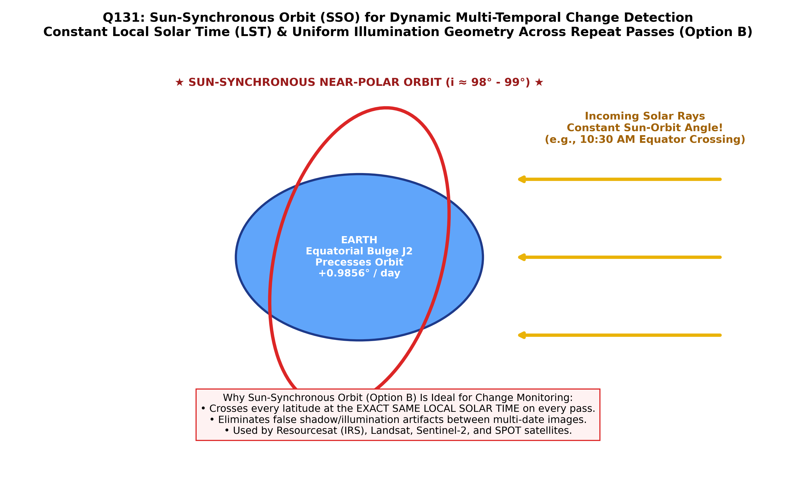

When monitoring dynamic surface phenomena on Earth—such as seasonal vegetation phenology, crop growth, volcanic thermal activity, reservoir storage, glacial retreat, urban sprawl, and coastal erosion—satellite data must be collected under consistent, repeatable solar illumination conditions over successive repeat passes.
If solar elevation and azimuth change radically between acquisition dates, differing shadows and changing solar illumination geometry introduce massive false radiance variations that corrupt automated image differencing and change-detection algorithms. To eliminate this critical error source, Earth observation satellites are placed into a Sun-Synchronous Orbit (Option B).
Because the Earth is an oblate spheroid (flattened at the poles with equatorial bulge $J_2 = 1.08263 \times 10^{-3}$), its non-spherical gravitational field exerts a torque on inclined orbits, causing the orbital plane to rotate or precess about the Earth's polar axis. This rate of nodal precession ($\dot{\Omega}$) is governed by:
where $a$ is the semi-major axis, $e$ is orbital eccentricity, and $i$ is orbital inclination. For an orbit to be sun-synchronous, the orbital plane must precess eastward at exactly the same rate as the Earth's mean orbital revolution around the Sun ($360^\circ / 365.25\text{ days} = 0.9856^\circ/\text{day} = 1.991 \times 10^{-7}\text{ rad/s}$):
| Orbit Type | Orbital Characteristics | Illumination Geometry | Suitability for Monitoring Dynamic Changes |
|---|---|---|---|
| SUN-SYNCHRONOUS ORBIT (Option B) | Near-polar, retrograde ($i \approx 97^\circ\text{--}99^\circ$), low altitude ($600\text{--}800\text{ km}$). Precesses at $0.9856^\circ/\text{day}$. | Constant Local Solar Time: Satellite crosses the equator at the exact same local solar time (typically 10:00 to 10:30 AM) on every pass. | Ideal & Standard: Landsat, Sentinel-2, IRS LISS, SPOT. Consistent shadow lengths enable automated multitemporal change detection. |
| Non-Synchronous Circular Orbit (Option A) | Circular orbit ($e=0$) at arbitrary inclination (e.g., ISS at $51.6^\circ$). | Solar time drifts continuously; passes over targets at dawn, noon, dusk, or midnight. | Poor: Massive seasonal and diurnal illumination shifts obscure true ground reflectance changes. |
| Near Polar Orbit (Option C) | Inclination near $90^\circ$ but without exact sun-synchronous precession tuning. | Does not maintain constant local solar time; orbital plane slowly drifts relative to the Sun. | Sub-optimal: Lacks fixed solar illumination angle; causes seasonal shadow drift. |
| Geostationary Orbit (GEO) | $h \approx 35,786\text{ km}$, $i = 0^\circ$ over the equator. | Continuous view of one hemisphere, but spatial resolution is coarse ($1\text{--}4\text{ km}$). | Excellent for rapid weather/clouds, but poor spatial resolution for terrestrial geological change. |

Because the sun-synchronous orbit ensures that the satellite crosses every terrestrial latitude at precisely the same local solar time, it provides identical solar elevation angles, minimizes shadow differences, and maximizes radiometric comparability across multitemporal scenes.
A sun-synchronous orbit is precisely tuned so that the satellite's orbital plane precesses eastward at the exact rate of Earth's solar revolution. This guarantees that the satellite passes over any given location on Earth at the identical local solar time on every repeat cycle, ensuring uniform sun angle and shadow conditions essential for multitemporal analysis and monitoring dynamic surface changes.
While sun-synchronous orbits are circular ($e \approx 0$) to keep scale constant, a generic circular orbit can have any inclination (e.g. $28^\circ$ or $51^\circ$). If not sun-synchronous, its overpass time drifts around the clock, causing erratic illumination changes that make dynamic monitoring impossible.
Sun-synchronous orbits are indeed near-polar ($i \approx 98^\circ$). However, "near polar" alone does not guarantee sun-synchronism; an orbit with $i = 90^\circ$ (true polar) has zero nodal precession ($\cos 90^\circ = 0$), causing its overpass time to drift relative to the Sun by 2 hours every month.
Incorrect, because Option B is the universally accepted standard orbit across all international Earth observation satellite programs.
| Satellite Mission | Orbital Altitude | Inclination ($i$) | Equatorial Crossing Time | Repeat Cycle |
|---|---|---|---|---|
| Landsat 8 & 9 (OLI/TIRS) | $705\text{ km}$ | $98.2^\circ$ | 10:00 AM ± 15 min (Descending) | 16 days (8 days combined) |
| Sentinel-2A & 2B (MSI) | $786\text{ km}$ | $98.62^\circ$ | 10:30 AM (Descending) | 5 days (combined) |
| IRS Resourcesat-1 & 2 (LISS) | $817\text{ km}$ | $98.7^\circ$ | 10:30 AM (Descending) | 24 days |
| Terra & Aqua (MODIS) | $705\text{ km}$ | $98.2^\circ$ | 10:30 AM (Terra) / 1:30 PM (Aqua) | 1 to 2 days (wide swath) |